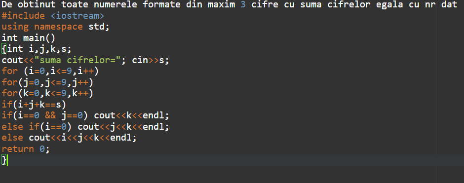

Se numeşte metoda trierii o metodă ce indentifică toate soluţiile unei probleme în dependenţă de mulţimea soluţiilor posibile. Toate soluţiile se identifică prin valori, ce aparţin tipurilor de date studiate: integer, boolean, enumerare, char, subdomeniu, tablouri unidimensionale.
Fie P o problemă, soluţia căreia se află printre elementele mulţimii S cu un număr finit de elemente. S={s1, s2 , s3 , ... , sn} . Soluţia se determină prin analiza fiecărui element si din mulţimea S.
SCHEMA GENERALĂ
for i:=1 to k do
if Solutie Posibila (si) then Prelucrarea Solutiei (si)
(Solutie Posibila este o funcţie booleana care returneaza valoarea true dacă elementul si satisface condiţiile problemei şi false în caz contrar, iar PrelucrareaSolutiei este o procedură care efectuează prelucrarea elementului selectat. De obicei, în această procedură soluţia si este afişată la ecran.)
Generarea soluţiilor posibile necesită elaborarea unor algoritmi speciali. În general,aceşti algoritmi realizează operaţiile legate de prelucrarea unor mulţimi:
|  |